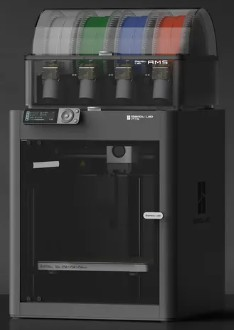

Finalised CAD Model
The phone casing was designed in Fusion 360, a professional CAD software widely used in product design and engineering. The bottom casing was modelled using a combination of extrude operations to build up the main body geometry and chamfer operations to break sharp edges, improving both the aesthetic quality of the part and its printability by reducing stress concentrations at corners. The GA drawing provided by the university was used as the reference throughout, with all key dimensions including the 114mm length, 60mm width, and critical interface features replicated as accurately as possible in the digital model.


The snap fit mechanism was a critical feature of the design, responsible for securing the top and bottom casings together without the need for screws or adhesives. This was modelled in Fusion 360 using a revolve operation, creating the curved cantilever profile of the snap fit arm around a central axis. The geometry was designed with a 135° chamfered lead-in angle as specified on the drawing, allowing the top casing to be pressed onto the bottom casing with controlled deflection before locking into place. Snap fit joints are a common feature in consumer electronics manufacturing due to their simplicity, low cost, and ease of assembly, all of which are directly relevant to the FESTO assembly line process (Bralla, 1999).

Manufacturing Method
The first prototype was printed on a Prusa MK3S, an open-frame FDM printer widely used in educational and prototyping environments. The MK3S offers several strengths; it is reliable, well-documented, and produces dimensionally accurate parts under controlled conditions. However, its open-frame design is a notable weakness in a lab environment: without an enclosure, ambient temperature fluctuations cause uneven cooling across the part during printing, which contributed to warping at the edges of the first casing print. Support structure quality was also poor, leaving scarred surface finish on contact areas after removal. Prusa Research (2023) acknowledge that the open-frame design of the MK3S makes it less suitable for materials and geometries sensitive to thermal variation, and recommend enclosure additions for improved consistency.

Following the issues encountered on the Prusa, all subsequent prints were completed on a Bambu Labs P1S. The P1S is a high-speed enclosed FDM printer that addresses the primary weaknesses of the MK3S directly. The sealed chamber eliminates ambient temperature variation, producing consistently flat, warp-free parts. Print speeds are significantly faster than conventional FDM machines, and support structure quality is considerably improved through Bambu's advanced slicing algorithm. The main weakness of the P1S is cost, at approximately £400–600 per unit it represents a high capital investment, which is relevant when considering scaling to the 70 printers identified in the plant simulation. Bambu Lab (2023) describe the P1S as optimised for both prototyping and functional part production, citing its enclosed CoreXY architecture as the primary contributor to its dimensional consistency at high print speeds.

Print Settings
| Parameter | Value | Reason |
|---|---|---|
| Material | PLA | Dimensional stability, low warping tendency, and suitable for functional prototypes |
| Layer height | 0.2mm | Balance between surface finish quality and print speed |
| Infill | 20% | Sufficient structural integrity for a functional prototype without excessive material use |
| Print time | 2 hours | Measured from actual print on the Bambu P1S; forms the basis of the plant simulation cycle time |
| Bed temperature | 55°C | Standard PLA bed adhesion temperature on the Bambu textured PEI plate |
| Nozzle temperature | 220°C | Standard PLA extrusion temperature on the Bambu P1S |
Critical Reflection: Is 3D Printing Right for 50,000 Units/Year?
The fundamental question for Phones-R-Us is whether FDM printing with PLA is the right manufacturing process at 50,000 units per year. For prototyping and small-batch production, additive manufacturing offers clear advantages; no tooling costs, rapid design iteration, and the ability to produce complex geometries such as the snap fit mechanism without specialist equipment. The iterative process used in this project, switching from the Prusa MK3S to the Bambu P1S and printing five versions in total, is a good example of this flexibility: design and process adjustments were made between prints with no additional tooling cost or lead time. However, at the volumes required by this project the economics become less favourable. Kalpakjian and Schmid (2014) note that injection moulding, while requiring significant upfront tooling investment of typically £10,000–£100,000 per mould, produces parts in seconds rather than hours and at a substantially lower per-unit material cost. At 50,000 units per year the tooling cost would be amortised relatively quickly, and cycle times of under 60 seconds per part would dramatically reduce the number of machines required compared to the 70 printers identified in the simulation. That said, 3D printing retains one critical advantage for a modular phone manufacturer: design flexibility. If Phones-R-Us intends to release multiple casing variants or update designs frequently, the absence of tooling means changes can be implemented immediately at no additional cost, an advantage that may justify the higher per-unit cost in the early stages of production.
1. Bambu Lab (2023) P1S Product Overview. Available at: https://bambulab.com/en/p1s (Accessed: May 2026).
2. Bralla, J.G. (1999) Design for Manufacturability Handbook. 2nd edn. New York: McGraw-Hill.
3. Kalpakjian, S. and Schmid, S. (2014) Manufacturing Engineering and Technology. 7th edn. Harlow: Pearson.
4. Prusa Research (2023) Original Prusa MK3S+ Product Page. Available at: https://www.prusa3d.com/product/original-prusa-i3-mk3s-3d-printer (Accessed: May 2026).